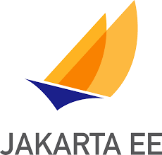
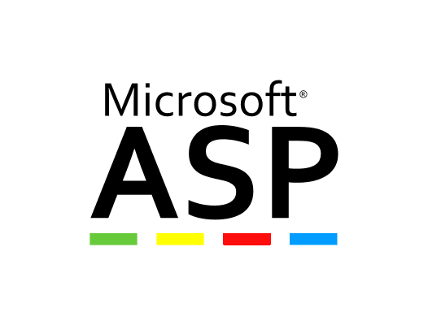
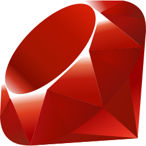

<?php echo "Hello World";?>{kind=link}

<%out.println("Hello World");%>{kind=link}

<%Response.Write("Hello World")%>{kind=link}

puts "Hello World"{kind=link}
print "Hello World";print("Hello World")| Vacances | Zone A | Zone B | Zone C |
|---|---|---|---|
| Académies de Besançon, Bordeaux, Clermont-Ferrand, Dijon, Grenoble, Limoges, Lyon et Poitiers. | Académies d'Aix-Marseille, Amiens, Lille, Nancy-Metz, Nantes, Nice, Normandie, Orléans-Tours, Reims, Rennes et Strasbourg. | Académies de Créteil, Montpellier, Paris, Toulouse et Versailles. | |
| Prérentrée des enseignants | Reprise des cours : vendredi 1er septembre 2017 | ||
| Rentrée scolaire des élèves | Reprise des cours : lundi 4 septembre 2017 | ||
| Vacances de la Toussaint | Fin des cours : samedi 21 octobre 2017 Reprise des cours : lundi 6 novembre 2017 |
||
| Vacances de Noël | Fin des cours : samedi 23 décembre 2017 Reprise des cours : lundi 8 janvier 2018 |
||
| Vacances d'hiver | Fin des cours : samedi 10 février 2018 Reprise des cours : lundi 26 février 2018 |
Fin des cours : samedi 24 février 2018 Reprise des cours : lundi 12 mars 2018 |
Fin des cours : samedi 17 février 2018 Reprise des cours : lundi 5 mars 2018 |
| Vacances de printemps | Fin des cours : samedi 7 avril 2018 Reprise des cours : lundi 23 avril 2018 |
Fin des cours : samedi 21 avril 2018 Reprise des cours : lundi 7 mai 2018 |
Fin des cours : samedi 14 avril 2018 Reprise des cours : lundi 30 avril 2018 |
| Vacances d'été | Fin des cours : samedi 7 juillet | ||
| Logo | Nom abrégé | Nom complet | Année de sortie | Site web de référence | Exemple de code |
|---|---|---|---|---|---|
| PHP | Hypertext Preprocessor | 1995 | PHP.net | <?php echo "Hello World";?> |
|
 |
JSP | Jakarta Server Pages | 1999 | jakarta.ee | <%out.println("Hello World");%> |
 |
ASP | Active Server Pages | 2000 | asp.net | <%Response.Write("Hello World")%> |
 |
Ruby | Ruby | 1995 | ruby-lang.org | puts "Hello World" |
| Perl | Perl | 1987 | perl.org | print "Hello World"; |
|
| Python | Hypertext Preprocessor | 1991 | python.org/ | print("Hello World") |